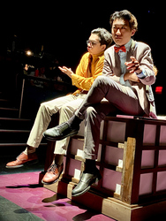

George Shen
Hello there! I am George, currently a second-year UCR student majoring in TFDP. In the realm of storytelling, I am a dual adventurer—treading the boards as an actor and navigating the cinematic landscape as a filmmaker. Born of a passion for narratives and a relentless pursuit of artistic expression, my journey unfolds on both stage and screen. As an actor, I am a chameleon, embodying characters with the fluidity of a seasoned shape-shifter. The stage is my sacred playground, where I dance between the realms of reality and fiction. Each role is a new pilgrimage, a journey into the psyche of diverse characters that allows me to explore the vast spectrum of human experience. From the delicate nuances of a whispered confession to the thunderous roar of unrestrained emotion, I relish the opportunity to be the vessel through which stories come to life. The power of acting lies in its ability to transcend boundaries, to evoke empathy and provoke introspection. I see the stage as a transformative space where the alchemy of emotions and narratives takes place. It's not merely about reciting lines; it's about living truthfully within imaginary circumstances, inviting the audience to join me in this shared exploration of the human condition. In tandem with my theatrical pursuits, I am equally captivated by the magic of filmmaking.
As a filmmaker, I become the architect of narratives, wielding the camera as my brush to paint stories on the canvas of the silver screen. From the inception of an idea to the final edit, I am immersed in the collaborative dance of filmmaking, orchestrating a symphony of visuals, sound, and emotion to create a cinematic experience that resonates with the soul. The director's chair is my throne, and from this vantage point, I orchestrate the symphony of storytelling. Every frame is a carefully crafted brushstroke, every cut a rhythmic beat in the narrative melody. Whether capturing the sweeping landscapes that mirror the characters' internal struggles or delving into the intricacies of intimate moments, I approach filmmaking as a visual poet, using the language of cinema to articulate the unspoken. The intersection of acting and filmmaking is where my artistic heart beats most fervently.
As an actor-filmmaker, I bring a unique perspective to both disciplines. Each informs the other, creating a symbiotic relationship that fuels my creative spirit. The empathy cultivated through acting informs my directorial decisions, while my directorial insights enhance my ability to inhabit characters with depth and authenticity. In this ever-evolving journey, I find fulfillment in the duality of my artistic pursuits. Whether under the spotlight or behind the camera, I am a storyteller at heart, a weaver of tales who seeks to provoke thought, stir emotions, and ignite the collective imagination. Through the lens of the actor and the gaze of the filmmaker, I navigate the boundless realms of storytelling, forever driven by the belief that within each tale lies the power to inspire, provoke, and ultimately, connect us all in the intricate dance of shared human experience.
Experience
Libarian Assistant
• Assisted the library staff members
• Gave tour guides for kids and teens
• Prepared for library events
Tech Volunteer
• Stage and costume designing
• Painting and helping make props
Stage Actor
• Cast member in TFDP Production of "Yellow Face"
• Cast as "D Vicious" in TFDP Production of "Airness"
• Cast as "Pastor" in AART Production of "Man of God"
• Cast as "Travis" in R'Stage Production of "One More Day"
Education
El Dorago High School
University of California Riverside
UCLA Film & Television
Portfolio
